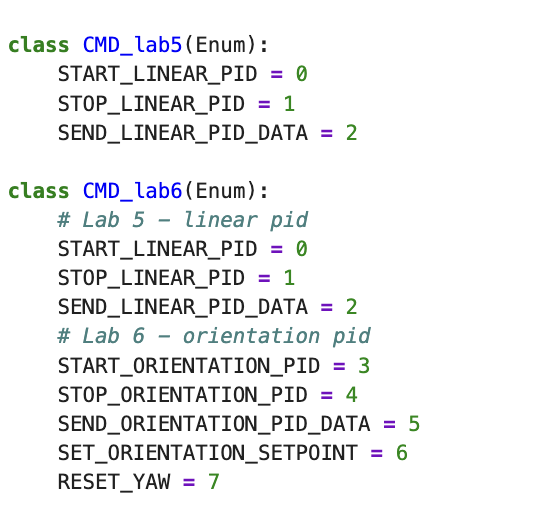
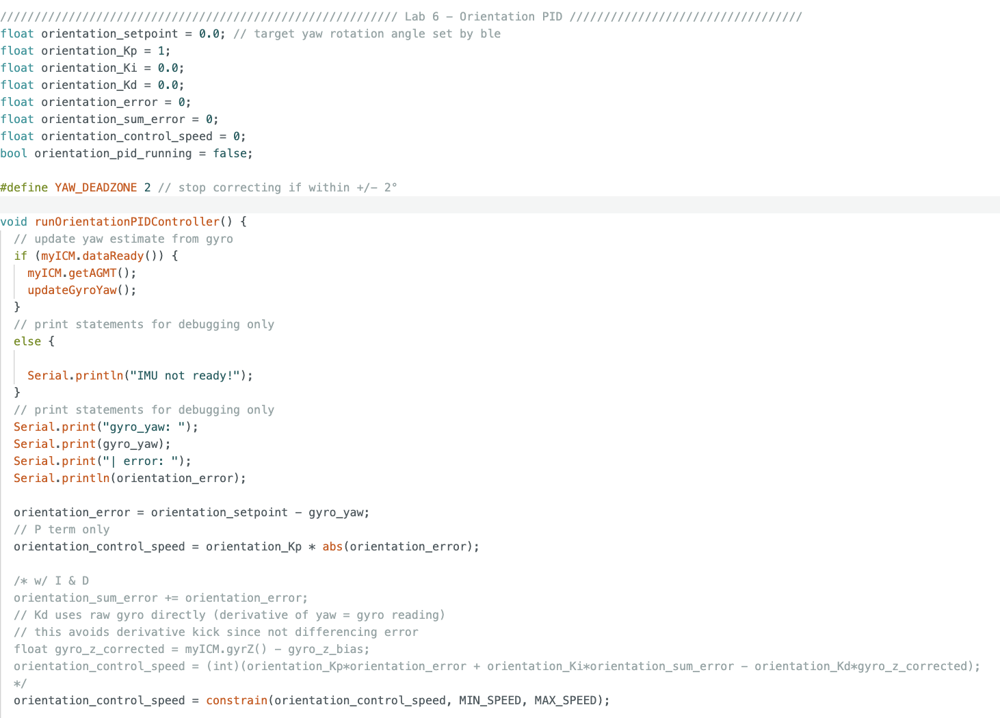
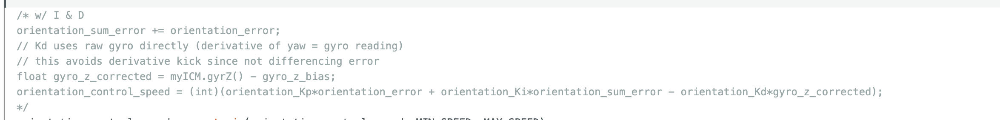
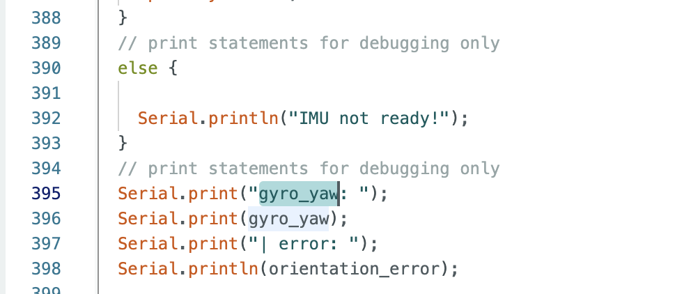
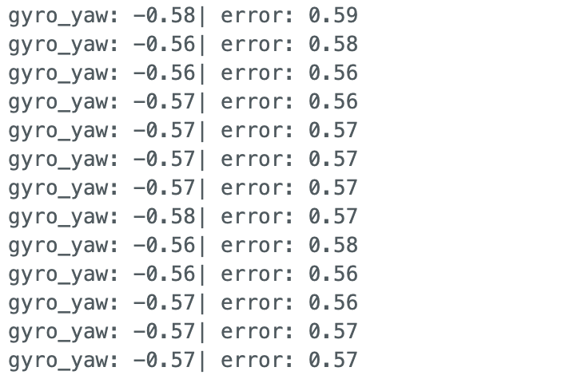
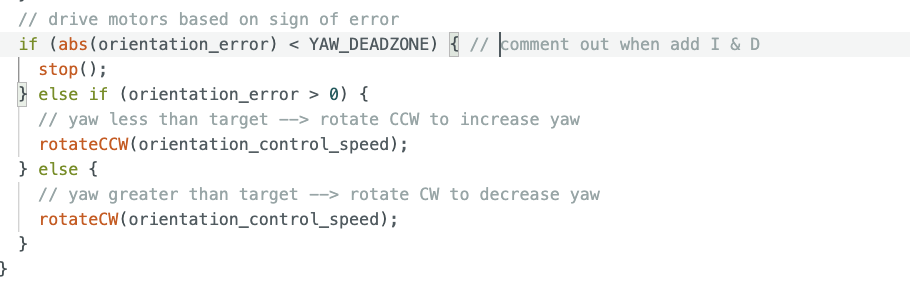
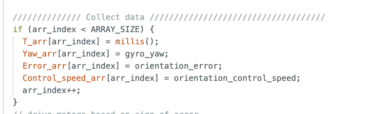
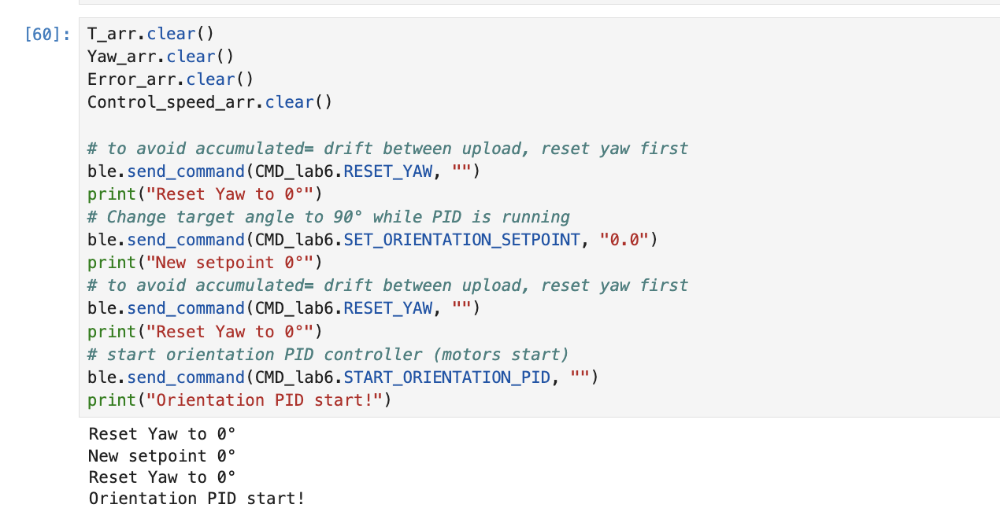
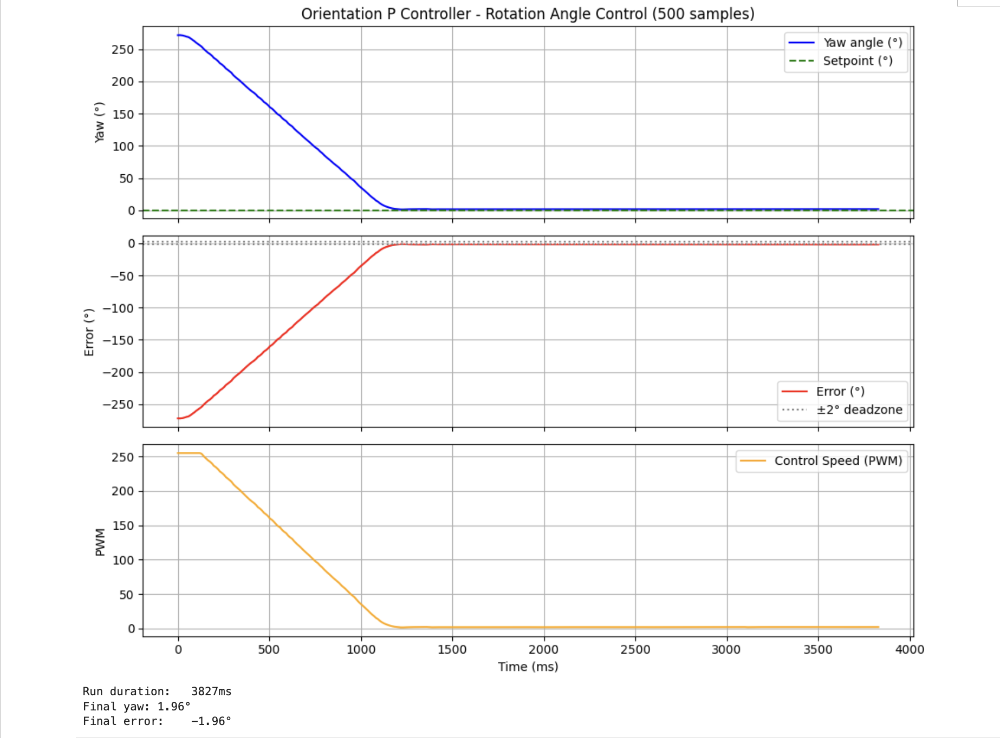
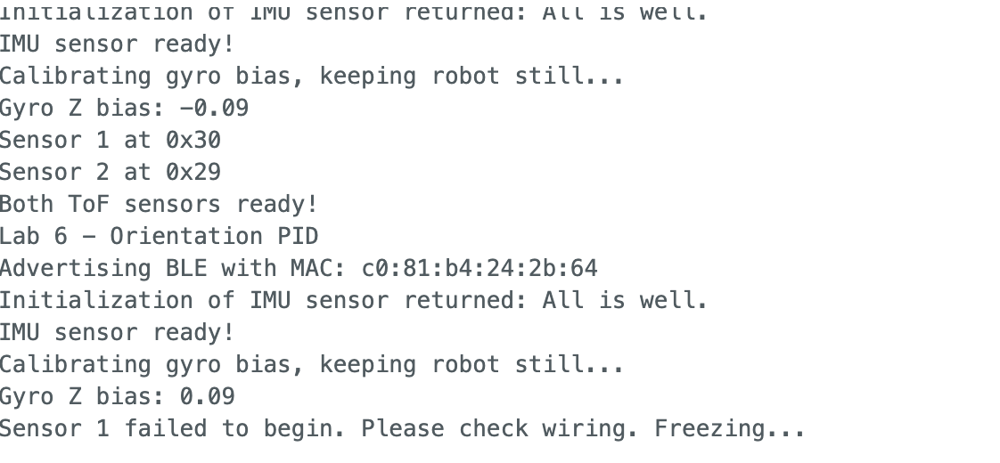

Lab 6: Orientation Control
Objective
The purpose of this lab is to implement orientation PID control using the IMU gyroscope. Rather than controlling wall distance (Lab 5), the robot now controls its yaw angle using differential drive, spinning both wheels at the same speed in opposite directions. When disturbed (kicked), the robot should return to its target angle.
Prelab: Bluetooth Communication
The BLE communication structure carries over from Labs 1–5. The Artemis collects timestamped yaw, error, and control speed into arrays during the PID run, then sends all data over BLE after the run completes, avoiding any BLE overhead during the control loop. New commands were added for Lab 6:

enum CommandTypes (left) and Python
CMD_lab6 enum (right). The integer values must
match exactly, BLE transmits only the integer, not the name.
CMD_lab5 is kept as a separate class for backward
compatibility with Lab 5 notebooks.
On the Python side, the notification handler parses the pipe-delimited BLE string and populates arrays for plotting:
def orientation_pid_data_notif_handler(uuid, byte_array):
s = ble.bytearray_to_string(byte_array)
# format: "T:1234|Y:45.2|E:-5.1|C:60.0"
s_split = dict(item.split(":") for item in s.split("|"))
T_arr.append(int(s_split["T"]))
Yaw_arr.append(float(s_split["Y"]))
Error_arr.append(float(s_split["E"]))
Control_speed_arr.append(float(s_split["C"]))
The workflow from Jupyter is: RESET_YAW → START_ORIENTATION_PID
→ kick robot → STOP_ORIENTATION_PID → SEND_ORIENTATION_PID_DATA
→ plot. The SET_ORIENTATION_SETPOINT command allows updating the target
angle in real time without restarting the controller, which is essential for future
navigation tasks.
A hard stop is implemented directly in the Artemis: when BLE disconnects, the
while(central.connected()) loop exits and stop() is called
immediately, ensuring motors never run uncontrolled.
PID Input Signal: Gyroscope Integration
Yaw is estimated by integrating the ICM-20948 gyroscope Z-axis reading over time:
void updateGyroYaw() {
unsigned long now = millis();
dt = (now - last_time) / 1000.0;
last_time = now;
float gyro_z_corrected = myICM.gyrZ() - gyro_z_bias;
gyro_yaw += gyro_z_corrected * dt;
}
Drift from digital integration: Integrating a noisy signal accumulates
error over time. Even a small constant bias of 0.1°/s becomes 6° of error after
60 seconds. To mitigate this, I measure gyro_z_bias at startup by
averaging 200 samples while the robot is completely still (~2 seconds). In testing,
the measured bias was -0.09°/s, reducing residual drift to under
0.1°/s. For longer-term stability, the ICM-20948's onboard DMP (Digital Motion
Processor) would provide superior yaw estimation via sensor fusion, which I plan
to explore in future labs.
Gyroscope range: The ICM-20948 default full-scale range is ±250°/s. For aggressive spins or disturbances this may clip, but for stationary orientation control with gentle kicks it is sufficient. The range is configurable up to ±2000°/s if needed for stunt maneuvers in later labs.
Derivative Term Considerations
Since gyro_yaw = ∫ gyro_z dt, the derivative of the yaw error is
simply the raw gyro Z reading, no numerical differentiation needed. This avoids
derivative kick: if the setpoint changes suddenly (via
SET_ORIENTATION_SETPOINT), a traditional
(error - prev_error)/dt implementation would spike the derivative
term. Using -gyro_z directly instead means setpoint changes never
produce a kick, since the gyro only measures actual physical rotation.
/* Full PID (not yet enabled):
float gyro_z_corrected = myICM.gyrZ() - gyro_z_bias;
orientation_control_speed = Kp*orientation_error
+ Ki*orientation_sum_error
- Kd*gyro_z_corrected;
*/A low-pass filter on the gyro before the D term would further reduce noise amplification, but is not necessary for the P-only controller implemented here.
Controller Implementation
PID Globals and P-Only Controller
I implemented a P-only controller as the starting point, with I and D terms stubbed out in a comment block for future labs. The globals and core control function are shown below:

runOrientationPIDController() function. The P term computes
control speed proportional to abs(orientation_error). The I and D
terms are commented out and will be added in future labs.
Future I and D Terms
The commented-out I and D implementation is shown below. Notably, the D term uses the raw gyro reading directly rather than differencing consecutive error values. Since yaw is already the integral of gyro Z, its derivative is just gyro Z, using this directly avoids derivative kick when the setpoint changes mid-run.

gyro_z_corrected (bias-subtracted raw gyro Z) rather than
(error - prev_error)/dt, avoiding derivative kick on setpoint changes.
Motor Direction Debugging
During initial testing the robot spun continuously and never returned to the setpoint. To debug, I added Serial print statements and commented out all motor commands, then rotated the robot by hand while watching the Serial Monitor to confirm gyro_yaw was updating correctly:

runOrientationPIDController() to track gyro_yaw
and orientation_error in real time. The else branch
prints "IMU not ready!" if dataReady() returns false.

The gyro was working fine, the real problem was that the motor correction
direction was inverted. With orientation_error > 0 (yaw below
target), I was calling rotateCW which drove yaw further negative
instead of correcting it. Swapping the two rotation directions fixed the runaway spin:

orientation_error > 0 (yaw less than target),
rotateCCW increases yaw toward the setpoint. When error is
negative, rotateCW decreases yaw. The ±2° deadzone stops
the motors once settled.
Data Collection
To avoid slowing down the control loop, there are no blocking delay()
calls or Serial prints during execution (debug prints were removed after tuning).
Data is collected into arrays each controller step, then sent over BLE to Jupyter
only after STOP_ORIENTATION_PID is received:

runOrientationPIDController(). Timestamp, yaw, error, and
control speed are stored each iteration into 500-element arrays. No BLE
transmission happens here, data is sent in bulk only after the run completes.
Python: Starting the Controller
Before each run, yaw is reset to zero to avoid accumulated drift between uploads.
The setpoint is explicitly set to 0° before starting, then
START_ORIENTATION_PID is sent:

RESET_YAW is sent twice, once to clear drift, once after
setting the setpoint, to ensure a clean zero reference before motors start (The motor still moved a bit before declaring it's stop position as the setpoint 0°, but I'll debug this in future lab).
Tuning: Kp = 0.1
P controller with Kp = 0.1. Robot returns to setpoint after a kick, but very slowly.
Tuning: Kp = 1.0
P controller with Kp = 1.0. Faster correction, still sluggish when pushed hard by hand.
At both Kp values, the robot corrects in the right direction but is noticeably slow when pushed gently by hand. This is expected from P-only control, the correction force scales linearly with error, so it weakens as the robot approaches the setpoint. Adding the I term will help push through the deadband at small errors, and Kd will improve settling speed. I also plan to add a Kalman filter for cleaner yaw estimation in a future lab.
Data: Kp = 1.0 Run

The plot shows clean proportional behavior: PWM starts saturated at 255 for the large initial error, ramps down as the robot approaches the setpoint, and drops to 0 inside the deadzone with no oscillation, consistent with a slightly underdamped P-only system. Adding Kd will tighten the settling.
ToF Sensor Initialization Issue
Throughout previous labs I struggled intermittently with ToF sensor initialization failures. In lab, Professor Helbling identified the root cause: one of the leads on my SparkFun Qwiic MultiPort breakout had been bent while plugging in a Qwiic connector, leaving only 3 of the 4 I2C leads making contact. After carefully bending the lead back into position, initialization worked correctly again.
However, after further testing, as I further wear down the previous bend lead, I now find that after each recompile and upload I need to physically unplug and replug one of the two ToF sensor cables for the sensors to initialize properly on the next boot. This is likely a persistent marginal contact issue in the same connector. A replacement Qwiic MultiPort (might be low supply in the lab) might resolve this, but for now, I work around it manually.
The ToF sensors are not used in Lab 6, orientation control relies entirely on the IMU. However, I keep both sensors in the codebase for forward compatibility with later labs where combined distance and orientation control will be needed.

References
- Lab 6 Instructions — Fast Robots @ Cornell
- Jeffrey Cai's Lab 6 Report (referenced for some code structure and data collection structure)
- Grammarly writing assistance is used to fix my report's grammar and sentence flow.